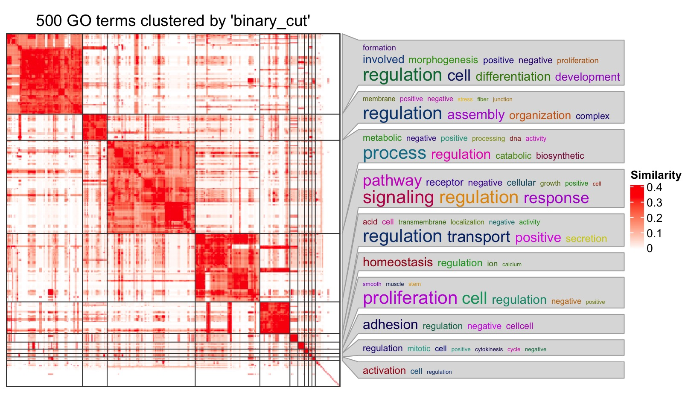
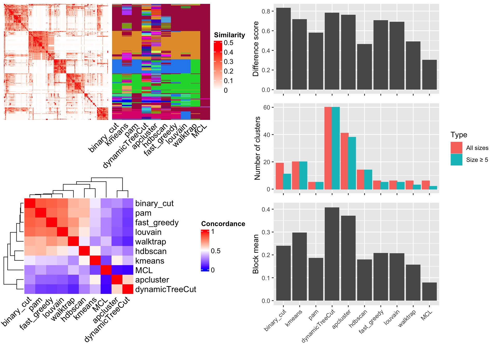
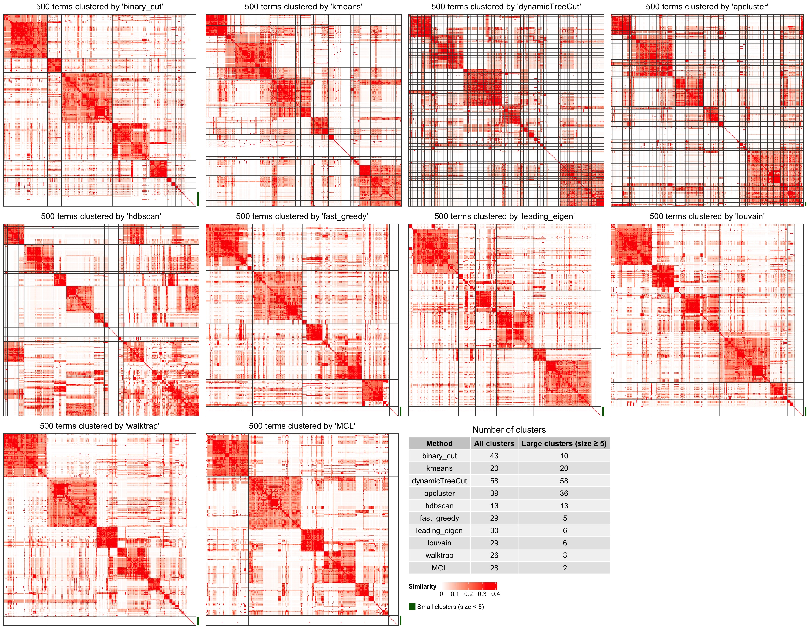
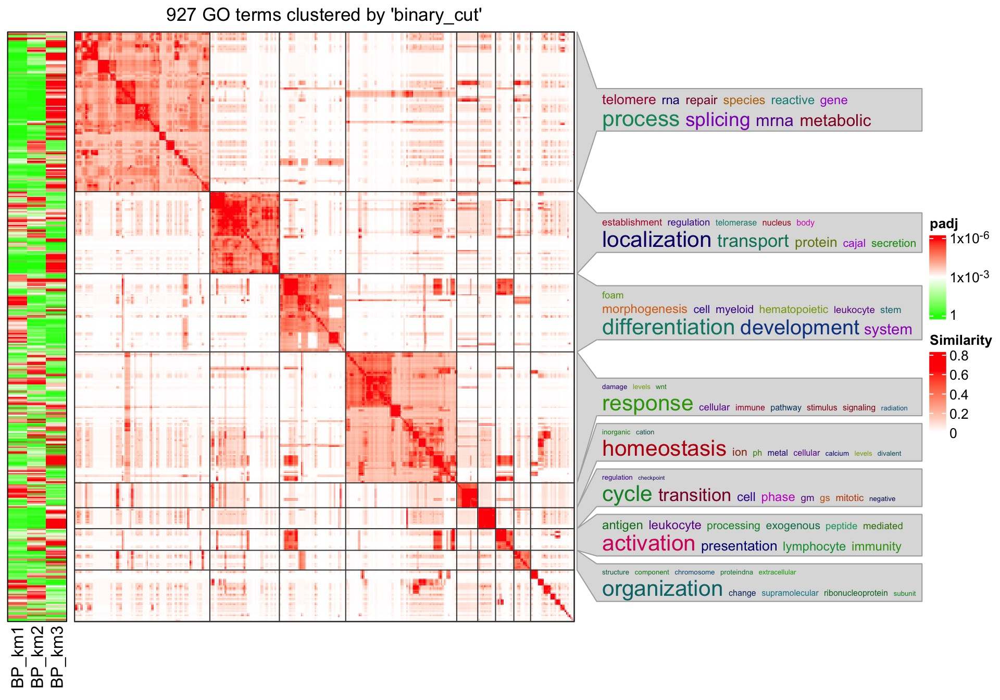

vignettes/simplifyEnrichment.Rmd
simplifyEnrichment.RmdThe simplifyEnrichment package clusters functional terms into groups by clustering the similarity matrix of the terms with a new proposed method “binary cut” which recursively applies partition around medoids (PAM) with two groups on the similarity matrix and in each iteration step, a score is assigned to decide whether the group of gene sets that corresponds to the current sub-matrix should be split or not. For more details of the method, please refer to the simplifyEnrichment paper.
The major use case for simplifyEnrichment is for simplying the GO enrichment results by clustering the corresponding semantic similarity matrix of the significant GO terms. To demonstrate the usage, we first generate a list of random GO IDs from the Biological Process (BP) ontology category:
library(simplifyEnrichment)
set.seed(888)
go_id = random_GO(500)simplifyEnrichment starts with the GO similarity matrix. Users can use their own similarity matrices or use the GO_similarity() function to calculate the semantic similarity matrix. The GO_similarity() function is simply a wrapper on GOSemSim::termSim(). The function accepts a vector of GO IDs. Note the GO terms should only belong to one same ontology (i.e., BP, CC or MF).
mat = GO_similarity(go_id)By default, GO_similarity() uses Rel method in GOSemSim::termSim(). Other methods to calculate GO similarities can be set by measure argument, e.g.:
GO_similarity(go_id, measure = "Wang")With the similarity matrix mat, users can directly apply simplifyGO() function to perform the clustering as well as visualizing the results.
df = simplifyGO(mat)
On the right side of the heatmap there are the word cloud annotations which summarize the functions with keywords in every GO cluster. Additionally, enrichment is done on keywords compared to GO background vocabulary and the significance corresponds to the font size of the keywords.
Note there is no word cloud for the cluster that is merged from small clusters (size < 5).
The returned variable df is a data frame with GO IDs and the cluster labels:
head(df)## id cluster
## 1 GO:0086066 1
## 2 GO:0090461 2
## 3 GO:0032912 3
## 4 GO:0090220 4
## 5 GO:0032495 5
## 6 GO:0070585 4The size of GO clusters can be retrieved by:
##
## 15 16 17 18 19 8 9 14 10 12 13 6 11 2 7 4 5 1 3
## 1 1 1 1 1 2 2 3 5 5 5 8 8 13 36 69 84 120 135Or split the data frame by the cluster labels:
split(df, df$cluster)plot argument can be set to FALSE in simplifyGO(), so that no plot is generated and only the data frame is returned.
If the aim is only to cluster GO terms, binary_cut() or cluster_terms() functions can be directly applied:
binary_cut(mat)## [1] 1 2 3 4 5 4 4 4 1 3 3 5 1 5 1 4 1 4 5 4 5 1 4 3 6
## [26] 3 7 4 3 1 1 3 8 7 3 3 5 1 4 4 5 2 4 9 5 1 1 7 3 7
## [51] 5 3 10 7 1 7 3 10 3 3 7 1 5 5 3 3 1 3 1 3 3 4 11 3 1
## [76] 3 4 7 3 3 1 5 4 6 3 3 1 1 4 5 7 7 3 4 5 3 1 1 4 6
## [101] 4 3 4 4 1 4 3 5 3 7 3 1 3 5 3 1 1 1 9 4 4 12 5 1 1
## [126] 1 1 5 4 1 4 1 3 5 5 5 1 5 3 5 5 5 1 3 5 5 13 1 2 4
## [151] 12 3 7 1 3 5 8 1 4 5 1 5 1 1 5 3 3 4 1 1 3 3 3 1 4
## [176] 4 1 3 4 3 3 5 5 4 4 3 1 3 5 3 5 3 3 3 1 1 1 5 4 3
## [201] 2 5 4 4 2 3 1 1 3 3 3 2 3 3 3 4 5 3 4 3 4 6 6 4 7
## [226] 4 5 5 1 1 3 1 14 12 7 7 5 5 3 3 7 3 1 4 1 1 5 14 3 5
## [251] 5 1 15 1 3 11 4 1 5 13 3 1 7 3 1 5 1 3 5 5 3 6 1 5 3
## [276] 11 1 2 7 4 5 13 1 1 10 3 5 3 3 3 7 4 5 3 3 4 1 1 4 7
## [301] 3 2 4 5 3 3 5 3 1 3 2 5 2 3 3 1 1 5 5 4 11 1 1 5 3
## [326] 3 1 4 5 1 1 1 1 7 3 2 3 2 5 3 5 1 13 3 3 4 7 1 4 6
## [351] 4 7 1 3 1 4 7 3 5 3 1 2 11 4 3 3 1 1 1 5 1 1 1 1 3
## [376] 5 4 7 3 10 1 3 1 7 3 1 3 11 3 16 4 6 3 1 7 7 14 1 5 4
## [401] 5 3 1 3 3 5 3 3 7 4 5 1 7 5 7 3 1 12 3 7 10 1 1 4 3
## [426] 1 3 13 1 3 3 1 1 5 3 3 1 1 1 1 17 5 1 3 7 3 1 5 1 5
## [451] 7 3 4 5 4 4 1 1 3 5 7 11 4 4 5 3 4 4 1 1 18 5 12 5 3
## [476] 3 3 3 5 5 3 3 3 4 1 11 5 1 3 3 1 5 3 1 3 19 7 5 3 1or
cluster_terms(mat, method = "binary_cut")binary_cut() and cluster_terms() basically generate the same clusterings, but the labels of clusters might differ.
Semantic measures can be used for the similarity of GO terms. However, there are still a lot of ontologies (e.g. MsigDB gene sets) that are only represented as a list of genes where the similarity between gene sets are mainly measured by gene overlap. simplifyEnrichment provides the term_similarity() and other related functions (term_similarity_from_enrichResult(), term_similarity_from_KEGG(), term_similarity_from_Reactome(), term_similarity_from_MSigDB() and term_similarity_from_gmt()) which calculate the similarity of terms by the gene overlapping, with methods of Jaccard coefficient, Dice coefficient, overlap coefficient and kappa coefficient.
The similarity can be calculated by providing:
enrichResult object which is normally from the ‘clusterProfiler’, ‘DOSE’, ‘meshes’ or ‘ReactomePA’ package.Once you have the similarity matrix, you can send it to simplifyEnrichment() function. But note, as we benchmarked in the manuscript, the clustering on the gene overlap similarity performs much worse than on the semantic similarity.
In the simplifyEnrichment package, there are also functions that compare clustering results from different methods. Here we still use previously generated variable mat which is the similarity matrix from the 500 random GO terms. Simply running compare_clustering_methods() function performs all supported methods (in all_clustering_methods()) excluding mclust, because mclust usually takes very long time to run. The function generates a figure with three panels:
In the barplots, the three metrics are defined as follows:

If plot_type argument is set to heatmap. There are heatmaps for the similarity matrix under different clusterings methods. The last panel is a table with the number of clusters.
compare_clustering_methods(mat, plot_type = "heatmap")
Please note, the clustering methods might have randomness, which means, different runs of compare_clustering_methods() may generate different clusterings (slightly different). Thus, if users want to compare the plots between compare_clustering_methods(mat) and compare_clustering_methods(mat, plot_type = "heatmap"), they should set the same random seed before executing the function.
set.seed(123)
compare_clustering_methods(mat)
set.seed(123)
compare_clustering_methods(mat, plot_type = "heatmap")compare_clustering_methods() is simply a wrapper on cmp_make_clusters() and cmp_make_plot() functions where the former function performs clustering with different methods and the latter visualizes the results. To compare different plots, users can also use the following code without specifying the random seed.
clt = cmp_make_clusters(mat) # just a list of cluster labels
cmp_make_plot(mat, clt)
cmp_make_plot(mat, clt, plot_type = "heatmap")New clustering methods can be added by register_clustering_methods(), removed by remove_clustering_methods() and reset to the default methods by reset_clustering_methods(). All the supported methods can be retrieved by all_clustering_methods(). compare_clustering_methods() runs all the clustering methods in all_clustering_methods().
The new clustering methods should be as user-defined functions and sent to register_clustering_methods() as named arguments, e.g.:
register_clustering_methods(
method1 = function(mat, ...) ...,
method2 = function(mat, ...) ...,
...
)The functions should accept at least one argument which is the input matrix (mat in above example). The second optional argument should always be ... so that parameters for the clustering function can be passed by control argument from cluster_terms() or simplifyGO(). If users forget to add ..., it is added internally.
Please note, the user-defined function should automatically identify the optimized number of clusters. The function should return a vector of cluster labels. Internally it is converted to numeric labels.
It is always very common that users have multiple lists of GO enrichment results (e.g. from multiple groups of genes) and they want to compare the significant terms between different lists, e.g. to see which biological functions are more specific in a certain list. There is a function simplifyGOFromMultipleLists() in the package which helps this type of analysis.
The input data for simplifyGOFromMultipleLists() (with the argument lt) can have three types of formats:
go_id_column argument and the column of the adjusted p-values can be specified with padj_column argument. If the two columns are not specified, they are automatically identified. The GO ID column is found by checking whether a column contains all GO IDs. The adjusted p-value column is found by comparing the column names of the data frame to see whether it might be a column for adjusted p-values. These two columns are used to construct a numeric vector with GO IDs as names.If the GO enrichment results is directly from upstream analysis, e.g. the package clusterProfiler or other similar packages, the results are most probably represented as a list of data frames, thus, we first demonstrate the usage on a list of data frames.
The function functional_enrichment() in cola package applies functional enrichment on different groups of signature genes from consensus clustering. The function internally uses clusterProfiler and returns a list of data frames:
# perform functional enrichment on the signatures genes from cola anlaysis
library(cola)
data(golub_cola)
res = golub_cola["ATC:skmeans"]
library(hu6800.db)
x = hu6800ENTREZID
mapped_probes = mappedkeys(x)
id_mapping = unlist(as.list(x[mapped_probes]))
lt = functional_enrichment(res, k = 3, id_mapping = id_mapping)## - 2050/4116 significant genes are taken from 3-group comparisons
## - on k-means group 1/3, 827 genes
## - 651/827 (78.7%) genes left after id mapping
## - gene set enrichment, GO:BP
## - on k-means group 2/3, 359 genes
## - 317/359 (88.3%) genes left after id mapping
## - gene set enrichment, GO:BP
## - on k-means group 3/3, 864 genes
## - 786/864 (91%) genes left after id mapping
## - gene set enrichment, GO:BP
names(lt)## [1] "BP_km1" "BP_km2" "BP_km3"
head(lt[[1]][, 1:7])## ID Description GeneRatio
## GO:0033993 GO:0033993 response to lipid 88/627
## GO:0003013 GO:0003013 circulatory system process 67/627
## GO:0014070 GO:0014070 response to organic cyclic compound 85/627
## GO:0051050 GO:0051050 positive regulation of transport 83/627
## GO:0008015 GO:0008015 blood circulation 58/627
## GO:1901699 GO:1901699 cellular response to nitrogen compound 69/627
## BgRatio pvalue p.adjust qvalue
## GO:0033993 886/18800 1.941766e-20 1.016709e-16 7.051676e-17
## GO:0003013 596/18800 1.835489e-18 3.899342e-15 2.704502e-15
## GO:0014070 900/18800 2.234153e-18 3.899342e-15 2.704502e-15
## GO:0051050 892/18800 1.447614e-17 1.894927e-14 1.314282e-14
## GO:0008015 511/18800 2.719921e-16 2.848301e-13 1.975521e-13
## GO:1901699 695/18800 3.870416e-16 3.350950e-13 2.324148e-13By default, simplifyGOFromMultipleLists() automatically identifies the columns that contain GO IDs and adjusted p-values, so here we directly send lt to simplifyGOFromMultipleLists(). We additionally set padj_cutoff to 0.001 because under the default cutoff 0.01, there are too many GO IDs and to save the running time, we set a more strict cutoff.
simplifyGOFromMultipleLists(lt, padj_cutoff = 0.001)
Next we demonstrate two other data types for simplifyGOFromMultipleLists(). Both usages are straightforward. The first is a list of numeric vectors:
lt2 = lapply(lt, function(x) structure(x$p.adjust, names = x$ID))
simplifyGOFromMultipleLists(lt2, padj_cutoff = 0.001)And the second is a list of character vectors of GO IDs:
lt3 = lapply(lt, function(x) x$ID[x$p.adjust < 0.001])
simplifyGOFromMultipleLists(lt3)The process of this analysis is as follows. Let’s assume there are \(n\) GO lists, we first construct a global matrix where columns correspond to the \(n\) GO lists and rows correspond to the “union” of all GO IDs in the \(n\) lists. The value for the ith GO ID and in the jth list are taken from the corresponding numeric vector in lt. If the jth vector in lt does not contain the ith GO ID, the value defined by default argument is taken there (e.g. in most cases the numeric values are adjusted p-values, thus default is set to 1). Let’s call this matrix as \(M_0\).
Next step is to filter \(M_0\) so that we only take a subset of GO IDs of interest. We define a proper function via argument filter to remove GO IDs that are not important for the analysis. Function for filter is applied to every row in \(M_0\) and filter function needs to return a logical value to decide whether to keep or remove the current GO ID. For example, if the values in lt are adjusted p-values, the filter function can be set as function(x) any(x < padj_cutoff) so that the GO ID is kept as long as it is signfiicant in at least one list. After the filtering, let’s call the filtered matrix \(M_1\).
GO IDs in \(M_1\) (row names of \(M_1\)) are used for clustering. A heatmap of \(M_1\) is attached to the left of the GO similarity heatmap so that the group-specific (or list-specific) patterns can be easily observed and to corresponded to GO functions.
Argument heatmap_param controls several parameters for heatmap \(M_1\):
transform: A self-defined function to transform the data for heatmap visualization. The most typical case is to transform adjusted p-values by -log10(x).breaks: Break values for color interpolation.col: The corresponding values for breaks.labels: The corresponding labels for legend.name: Legend title.## R version 4.2.0 (2022-04-22)
## Platform: x86_64-apple-darwin17.0 (64-bit)
## Running under: macOS Big Sur/Monterey 10.16
##
## Matrix products: default
## BLAS: /Library/Frameworks/R.framework/Versions/4.2/Resources/lib/libRblas.0.dylib
## LAPACK: /Library/Frameworks/R.framework/Versions/4.2/Resources/lib/libRlapack.dylib
##
## locale:
## [1] C/UTF-8/C/C/C/C
##
## attached base packages:
## [1] stats4 grid stats graphics grDevices utils datasets
## [8] methods base
##
## other attached packages:
## [1] hu6800.db_3.13.0 org.Hs.eg.db_3.15.0 AnnotationDbi_1.58.0
## [4] IRanges_2.30.0 S4Vectors_0.34.0 Biobase_2.56.0
## [7] cola_2.3.1 simplifyEnrichment_1.7.2 BiocGenerics_0.42.0
## [10] knitr_1.39
##
## loaded via a namespace (and not attached):
## [1] utf8_1.2.2 tidyselect_1.1.2 RSQLite_2.2.15
## [4] BiocParallel_1.30.3 scatterpie_0.1.7 munsell_0.5.0
## [7] codetools_0.2-18 ragg_1.2.2 colorspace_2.0-3
## [10] GOSemSim_2.22.0 NLP_0.2-1 highr_0.9
## [13] robustbase_0.95-0 DOSE_3.22.0 labeling_0.4.2
## [16] slam_0.1-50 GenomeInfoDbData_1.2.8 polyclip_1.10-0
## [19] bit64_4.0.5 farver_2.1.1 rprojroot_2.0.3
## [22] downloader_0.4 vctrs_0.4.1 treeio_1.20.1
## [25] generics_0.1.3 xfun_0.31 diptest_0.76-0
## [28] R6_2.5.1 markdown_1.1 doParallel_1.0.17
## [31] GenomeInfoDb_1.32.2 clue_0.3-61 graphlayouts_0.8.0
## [34] flexmix_2.3-18 bitops_1.0-7 cachem_1.0.6
## [37] fgsea_1.22.0 gridGraphics_0.5-1 assertthat_0.2.1
## [40] scales_1.2.0 ggraph_2.0.5 nnet_7.3-17
## [43] enrichplot_1.16.1 gtable_0.3.0 Cairo_1.6-0
## [46] tidygraph_1.2.1 rlang_1.0.4 genefilter_1.78.0
## [49] systemfonts_1.0.4 eulerr_6.1.1 GlobalOptions_0.1.2
## [52] splines_4.2.0 lazyeval_0.2.2 impute_1.70.0
## [55] brew_1.0-7 yaml_2.3.5 reshape2_1.4.4
## [58] qvalue_2.28.0 gridtext_0.1.4 clusterProfiler_4.4.4
## [61] tools_4.2.0 ggplotify_0.1.0 ggplot2_3.3.6
## [64] jquerylib_0.1.4 RColorBrewer_1.1-3 dynamicTreeCut_1.63-1
## [67] skmeans_0.2-14 Rcpp_1.0.9 plyr_1.8.7
## [70] zlibbioc_1.42.0 purrr_0.3.4 RCurl_1.98-1.8
## [73] dbscan_1.1-10 GetoptLong_1.1.0 viridis_0.6.2
## [76] cowplot_1.1.1 ggrepel_0.9.1 cluster_2.1.3
## [79] fs_1.5.2 apcluster_1.4.10 magrittr_2.0.3
## [82] data.table_1.14.2 magick_2.7.3 DO.db_2.9
## [85] circlize_0.4.16 matrixStats_0.62.0 patchwork_1.1.1
## [88] evaluate_0.15 xtable_1.8-4 XML_3.99-0.10
## [91] mclust_5.4.10 gridExtra_2.3 shape_1.4.6
## [94] compiler_4.2.0 tibble_3.1.8 shadowtext_0.1.2
## [97] crayon_1.5.1 htmltools_0.5.3 proxyC_0.2.4
## [100] ggfun_0.0.6 tidyr_1.2.0 aplot_0.1.6
## [103] expm_0.999-6 RcppParallel_5.1.5 MCL_1.0
## [106] DBI_1.1.3 tweenr_1.0.2 ComplexHeatmap_2.13.1
## [109] MASS_7.3-58 fpc_2.2-9 Matrix_1.4-1
## [112] cli_3.3.0 parallel_4.2.0 igraph_1.3.4
## [115] pkgconfig_2.0.3 pkgdown_2.0.6 microbenchmark_1.4.9
## [118] xml2_1.3.3 foreach_1.5.2 ggtree_3.4.1
## [121] annotate_1.74.0 bslib_0.4.0 XVector_0.36.0
## [124] yulab.utils_0.0.5 stringr_1.4.0 digest_0.6.29
## [127] Biostrings_2.64.0 tm_0.7-8 rmarkdown_2.14
## [130] fastmatch_1.1-3 tidytree_0.3.9 kernlab_0.9-31
## [133] modeltools_0.2-23 rjson_0.2.21 lifecycle_1.0.1
## [136] nlme_3.1-158 jsonlite_1.8.0 desc_1.4.1
## [139] viridisLite_0.4.0 fansi_1.0.3 pillar_1.8.0
## [142] lattice_0.20-45 KEGGREST_1.36.3 fastmap_1.1.0
## [145] httr_1.4.3 DEoptimR_1.0-11 survival_3.3-1
## [148] GO.db_3.15.0 glue_1.6.2 png_0.1-7
## [151] prabclus_2.3-2 iterators_1.0.14 bit_4.0.4
## [154] ggforce_0.3.3 class_7.3-20 stringi_1.7.8
## [157] sass_0.4.2 blob_1.2.3 textshaping_0.3.6
## [160] memoise_2.0.1 dplyr_1.0.9 irlba_2.3.5
## [163] ape_5.6-2